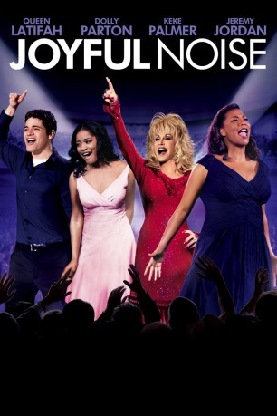
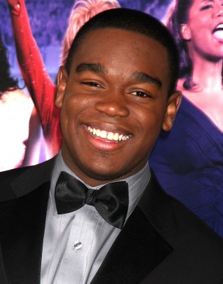
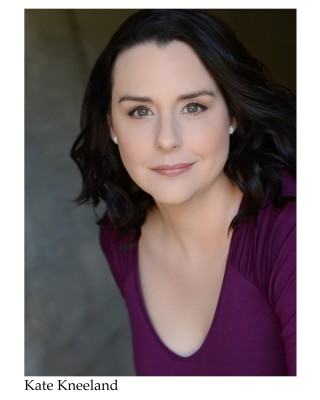
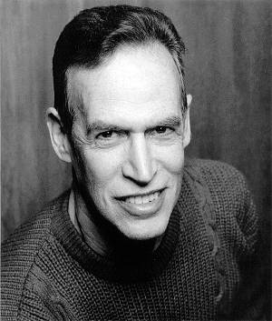

#9131 Joyful Noise
 
 IMDB-Wertung: 5.8 / 10
IMDB-Wertung: 5.8 / 10  Tomatometer: 31
Tomatometer: 31  Metascore: 0
Metascore: 0 
Der Divinity Kirchenchor hilft den Bewohnern der Kleinstadt Pacashau in Georgia, über harte Zeiten hinweg zu kommen. Sie wollen ihre Seelen durch den Gewinn beim nationalen Joyful Noise Wettbewerb wieder mit positiver Energie auffüllen. Zwar herrscht beim Singen des Chors schon immer eine große Harmonie, nur das Gezanke zwischen den beiden Hauptsängerinnen bedroht den Zusammenhalt der Gemeinschaft. Die neue Dirigentin Vi Rose Hill versucht, mit einer traditionellen Trainingsmethode wieder Ruhe und Ordnung in die Runde zu bringen.
Jahr: 2012
Dauer: 117 Minuten
FSK:
Land: USA Studio: Warner Bros.Tonspuren: DD5.1 - ,
Untertitel: Englisch,
Auflösung: 1080p (1920x800) Größe: 8458 MB
Genre: Drama, Musik, Komödie
Regisseur: Todd Graff
Drehbuch: Julian Barnes
Soundtrack: Mervyn Warren
Darsteller:
 Queen Latifah als Vi Rose Hill
Queen Latifah als Vi Rose Hill- Dolly Parton als G.G. Sparrow
 Keke Palmer als Olivia Hill
Keke Palmer als Olivia Hill- Jeremy Jordan als Randy Garrity
-  Dexter Darden als Walter Hill
 Courtney B. Vance als Pastor Dale
Courtney B. Vance als Pastor Dale Jesse L. Martin als Marcus Hill
Jesse L. Martin als Marcus Hill- Kirk Franklin als Baylor Sykes
- Angela Grovey als Earla
- Andy Karl als Caleb
 Kris Kristofferson als Bernard Sparrow
Kris Kristofferson als Bernard Sparrow- Paul Woolfolk als Manny
- Francis Jue als Mr. Hsu
- Roy Huang als Justin
 Judd Lormand als Officer Darrell Lino
Judd Lormand als Officer Darrell Lino- Karen Peck als 'Mighty High' Soloist
- Ivan Kelley Jr. als Our Lady of Perpetual Tears Soloist
- Kevin Bulla als Stage Manager
- Ziah Colon als Club Girl
- Hajji Golightly als Man at Table
- Rana Kirkland als Church Kitchen Patron #1
- Maurice Johnson als Man with Cellphone
- Michelle Kabashinski als Pacashau Sacred Divinity Choir Member
- Rivka Levin als Pacashau Sacred Divinity Choir Member
- Takara Clark als Holy Vision Church of Detroit Choir Member
- Dixie Light als Holy Vision Church of Detroit Choir Member
- Brian Ashton Smith als Holy Vision Church of Detroit Choir Member
- Karen Beyer als 'Mighty High' Choir Member
- Whitney Christopher als 'Mighty High' Choir Member
- Jyn Hall als 'Mighty High' Choir Member
-  Kate Kneeland als 'Mighty High' Choir Member
- Dustin Lewis als 'Mighty High' Choir Member
- Zechariah Pierce als 'Mighty High' Choir Member
- L.A. Winters als 'Mighty High' Choir Member
- Shameik Moore als Our Lady of Perpetual Tears Choir Master
 Isabella Amara als Our Lady of Perpetual Tears Choir Member
Isabella Amara als Our Lady of Perpetual Tears Choir Member- Chloe Bailey als Our Lady of Perpetual Tears Choir Member
- Trey Best als Our Lady of Perpetual Tears Choir Member
- Bryana Salaz als Our Lady of Perpetual Tears Choir Member
- Tyler Silva als Our Lady of Perpetual Tears Choir Member
- Natalie Ragins als Pacashau Sacred Divinity Musician (Organ)
- Mervyn Warren als Pacashau Sacred Divinity Musician (Piano)
 Chance Bartels als G.G.'s Son (uncredited)
Chance Bartels als G.G.'s Son (uncredited)- Carlos Ramónne Graham als Concert goer (uncredited)
- Josiah Lyricq als Church Member (uncredited)
- BreeAnna Marie als Audience (uncredited)
- Moses J. Moseley als Club Goer (uncredited)
- Brett Taylor als Audience Member (uncredited)
-  Steve Warren als Vi's Hospital Patient (uncredited)
- Dequina Moore als Devonne
Datei: X:\2012(G-M)\Joyful Noise (2012, FSK, 1920x800).mkv seit 19.07.2018
Festplatte: HD 2012(A-M)
 Es gibt insgesamt 112 Filme in der Gruppe '2012(G-M)'
Es gibt insgesamt 112 Filme in der Gruppe '2012(G-M)'